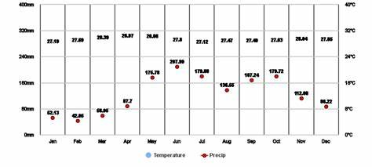
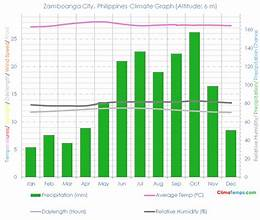
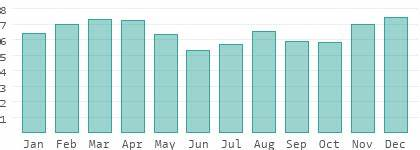
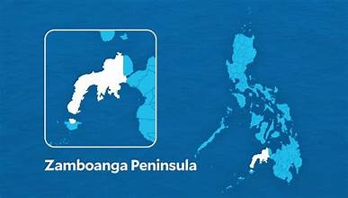
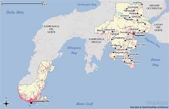
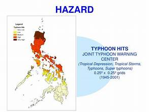

Zamboanga del Sur experiences a tropical climate influenced by the province's proximity to the sea and its mountainous interior. The province generally has no pronounced dry season but experiences heavier rainfall during the northeast monsoon months.
Average temperatures range from 26°C to 32°C throughout the year. The coastal areas tend to be warmer, while the highland areas, particularly near Mount Pinukis, can be significantly cooler, especially at night.
Annual rainfall ranges from 2,000 to 3,000 millimeters. The eastern portions of the province tend to receive more rainfall due to orographic effects from the mountain ranges. Pagadian City is notably foggy in the mornings, a characteristic feature of the capital.
The province is affected by both the northeast and southwest monsoons. The northeast monsoon (amihan) from October to January brings cooler temperatures and moderate rains. The southwest monsoon (habagat) affects the western coast during mid-year.
Zamboanga del Sur lies in a relatively low-risk typhoon belt compared to other Philippine regions. However, tropical storms occasionally bring heavy rains and cause flooding in low-lying areas and along river banks.
Agriculture is closely tied to rainfall patterns, with rice planting typically done at the start of the rains. Fisherfolk adjust their activities according to sea conditions, particularly during the monsoon season.


